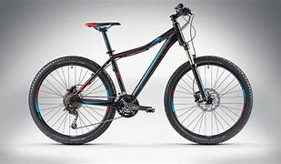
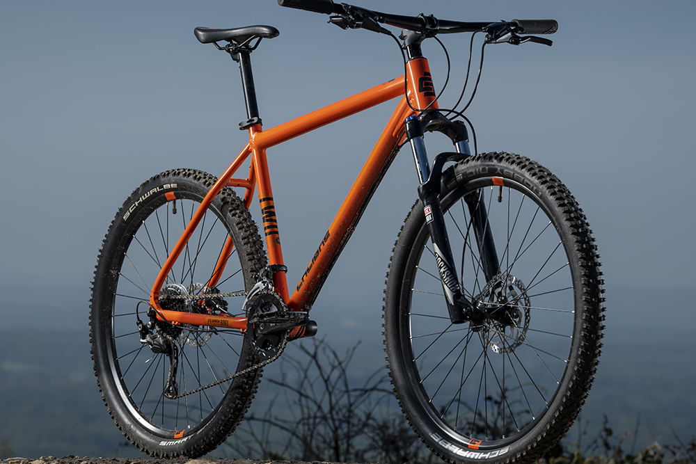
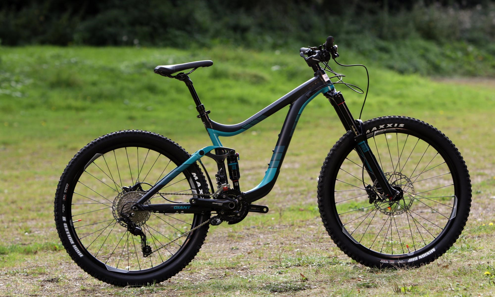
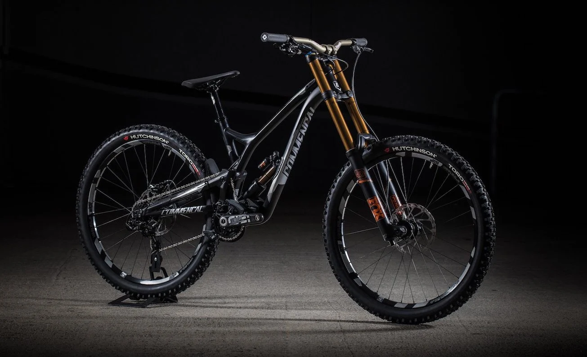

Dentro de la categoria de Bicicletas de Montaña existen algunas variantes, la mas comun es la que se conoce como Rígida Hard tail la cual
es la mas popular de todas,
este tipo de bicileta es ideal para utilizarse con fines recreativos que no demandan demasiada resistencia por parte del ciclista.
es perfecta para utilizarse en zonas
urbanas o zonas un poco mas accidentadas estilo campo traviesa y sortear algunos obstaculos medianos y algunos saltos
de poca altura;
Estos son unos ejemplos de una Bicicleta de Montaña Rigida/Hardtail:
 A diferencia de una Bicicleta Rígida/Hardtail, una bicicleta de doble suspension ofull suspension cuentan con un diseño de mayor complejidad ya que cuenta con un marco
que
esta compuesto por 2 piezas que estan unidas entre si y en un punto de su geometria se conectan a travez de un resorte o sistema de suspensión que le otorga la amortiguación
a la
parte posterior de la Bicicleta, gracias a su diseño y nivel de complejidad, este tipo de bicicletas soportan un uso mas rudo y suelen estar hechas de materiales mas ligeros que les
permite ser mas ligeras y maniobrables, esto mismo tiene como consecuencia que los precios de las bicicletas de suspensión doble sean mucho mas alto que las de una Rígida
Estos son unos ejemplos de una Bicicleta suspensión doble actual:
  Volver a Inicio